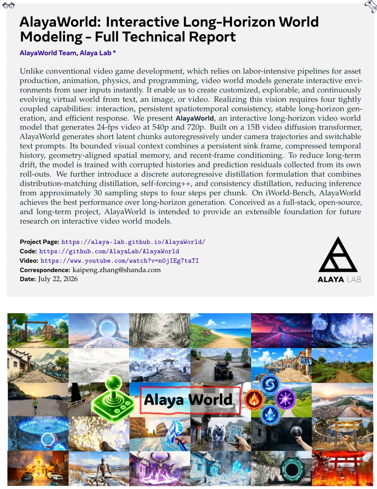
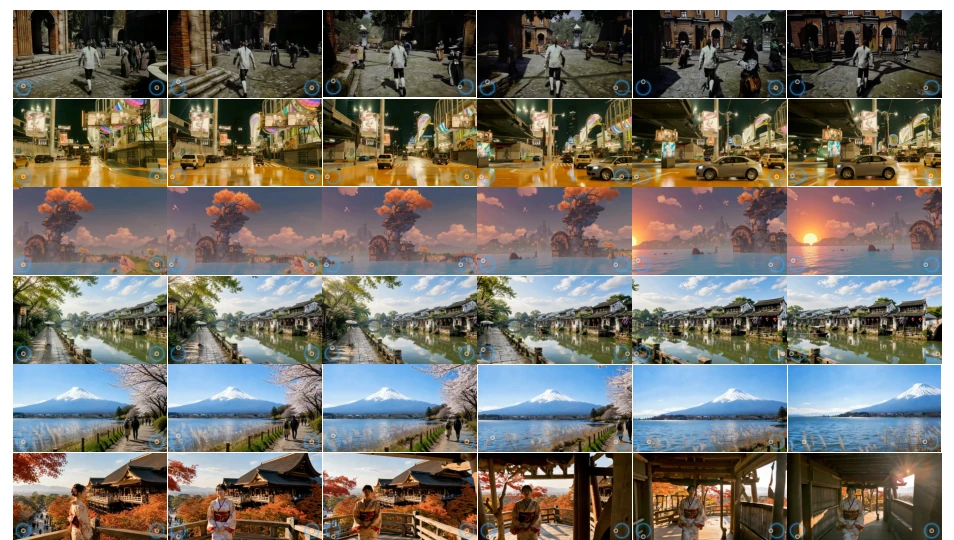
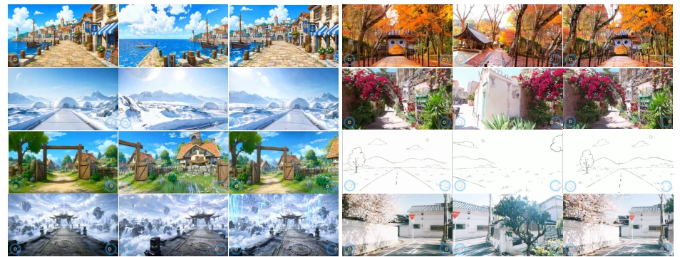
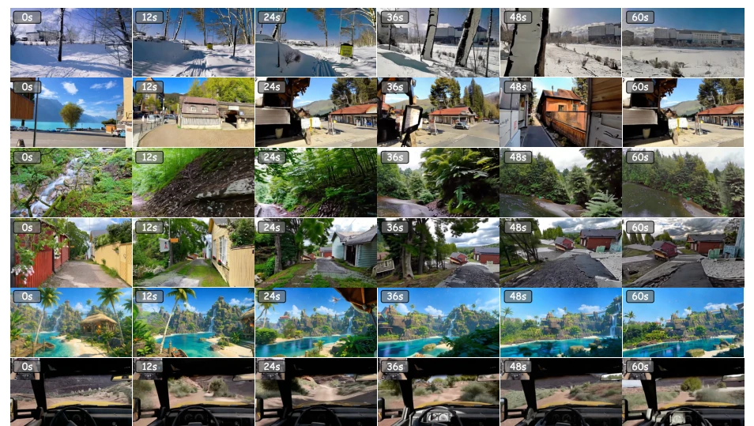
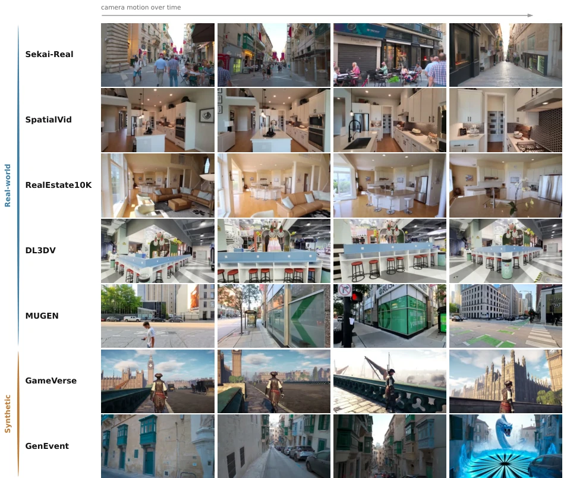
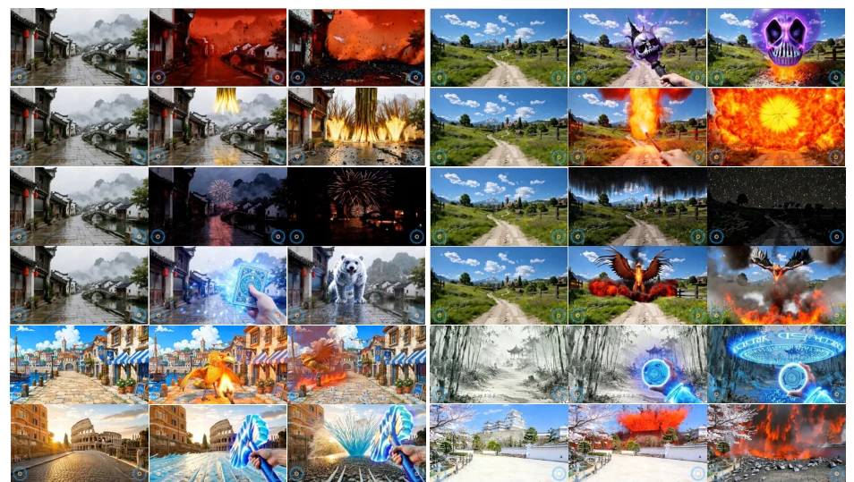

AlayaWorld attempts to construct an "infinite world" by stacking pixels, but the resolution of 540p/720p appears somewhat underwhelming in 2026, akin to equipping VR glasses with a low-definition screen. However, it achieved first place in long-term consistency on iWorld-Bench, relying on "spatial memory" to withstand revisit drift, which is smarter than pure video generation models. Unfortunately, it remains "visual phenomenology," unaware of physical causality; characters may clip through models without triggering collision detection. Although open source is beneficial, the inference cost of the 15B model might discourage small and medium teams. It proves that interactive world models can detach from traditional game engines, but there is still a gap from a true "physical world," currently more visual hallucination than logical truth.
Traditional game development relies on expensive manual pipelines [10], making it difficult to achieve personalized, rapidly evolving interactive worlds. Video world models offer a new path, but existing models like Yume [19] tend to accumulate blur and geometric drift in long-term generation. Although Cosmos [1] is powerful, interaction and long-term memory remain challenges. This paper aims to solve the coupled challenges of interaction, spatiotemporal consistency, long-term stability, and efficiency. Existing work often sacrifices one for the other: broad interaction compromises consistency, long-term rollout accumulates errors, accelerated sampling sacrifices stability. AlayaWorld attempts to balance these four points through a unified framework, replacing traditional asset production pipelines to achieve instant generation from text/images to interactive environments.

Figure 1 Interactive world simulation across diverse scenes.
The model is based on a 15B video diffusion Transformer, trained in three stages. 1. Bidirectional pre-training: adapting to general video priors. 2. AR training: introducing history compression modules, spatial memory (depth rendering reprojection), and camera control. The core is "bounded visual context," containing Sink frame anchoring, Temporal memory, and Spatial memory, ensuring revisit consistency. Drift resistance strategies include Helios simulation and Error Bank replay, the latter adding residuals generated by the model itself into the context, teaching the model to recover from errors. 3. Distillation: combining DMD, Self-forcing++, and consistency distillation, compressing 30-step sampling to 4 steps to achieve low-latency interaction. Spatial memory reprojects historical frames to the current view via depth maps, solving geometric drift and ensuring scene structure does not collapse in the long term.
Evaluated on iWorld-Bench [5] and WorldMark [30]. Compared with Cosmos [1], HunyuanVideo [25], etc. AlayaWorld ranks first in brightness consistency, color constraints, and memory symmetry. Qualitative results show smooth camera control, natural prompt-driven actions, and intact scene structure under "leave-return" trajectories. Long-term generation shows no severe blur or lighting drift, verifying the effectiveness of the memory mechanism. Trajectory accuracy also outperforms the baseline, proving effective control signal injection. Evaluation uses 480p resolution, 4-step sampling per block, demonstrating high performance under low computational cost.

Figure 5 Qualitative results of camera-controlled generation. AlayaWorld follows diverse camera trajectories while maintaining coherent scene geometry and visual appearance.

Figure 7 Qualitative results of consistent world generation under leave-and-return trajectories. AlayaWorld preserves scene structure and visual identity when revisiting previously observed regions.

Figure 8 Qualitative results of long-horizon autoregressive generation. AlayaWorld maintains stable visual quality and coherent scene evolution over extended rollouts.
其他图片Other Figures

Figure 2 Representative training samples from the seven data sources, grouped by source type. Each row contains four temporally ordered frames from a single clip, making both the appearance diversity of the corpus and the camera motion available for supervision visible within one view.

Figure 6 Qualitative results of prompt-driven actions. AlayaWorld introduces newly requested actions and events during autoregressive generation while preserving the existing scene context.